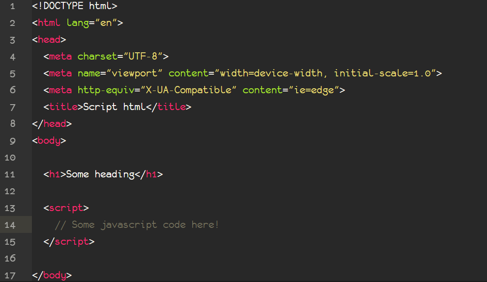

What is JavaScript?
Definition
JavaScript is a programming language that allows you to implement complex items on web pages - every time a web page does more than just show you static information - showing content that updates over a period of time, interactive maps or graphics Animated 2D / 3D, etc. - you can bet that JavaScript is probably involved.
Brief History
JavaScript was created in the 1990s by Brendan Eich at the service of Netscape. This decade was a period of revolution, as browsers were still static. The most popular browser at that time was Mosaic, by NCSA. Netscape concluded that the web would have to become more dynamic, as the Navigator always had to make a request to the server to get a response in the browser. In 1995, Netscape hired Brendan Eich to create a language that would provide that.
Even with “Javanese” syntax and other characteristics of Java (primitive values and objects), JavaScript from the beginning suffered the functional influence of Scheme, and later of languages like Self (prototypes), Perl and Python (Strings, arrays and regular expressions). In late November 1995, version 2.0B3 of the Navigator came out with the “ten-day” version without much change. In early December 1995, Java was at its peak and the language was renamed to JavaScript.
After JavaScript was created, Microsoft created, in August 1996, an identical language to be used in Internet Explorer 3. To contain Microsoft's ambition, Netscape decided to standardize the language through the organization ECMA International, a company that was specialized standards and norms. Work on the ECMA-262 standard began in November 1996. The name JavaScript was already patented by Sun Microsystems (now Oracle) and could not be used. Therefore, the name composed of ECMA and JavaScript was used, resulting in ECMAScript.
Even with that name, the language is still affectionately known by JavaScript to this day. ECMAScript is only used to refer to language versions.
JavaScript Versions
ECMAScript 1 - 1997
The first version (“ten days”).
ECMAScript 2 - 1998
Editorial changes to align the ECMA-262 with the ISO / IEC 16262 standard.
ECMAScript 3 - 1999
It was in this version that JavaScript gained important implementations such as do-while, regular expressions, new methods for the string object, exception handling, among other things.
ECMAScript 4 - 2008
ECMAScript 4 was developed to be the new version of JavaScript with a prototype written in ML. However, TC39 rejected the prototype because of its new implementations. The amount of new features would make the migration from ECMAScript 3 to 4 very disruptive.
ECMAScript 5 - 2009
Strict mode ('use strict'), getters and setters, new array methods, JSON support, among other things. This is the incremental update agreed upon at the close of ECMAScript 4.
ECMAScript 5.1 - 2011
Editorial changes to align the ECMA-262 with the third version of the ISO / IEC 16262: 2011 standard.
ECMAScript 6 - 2015
Also known as ECMAScript 2015, it is the first phase of the Harmony version. It includes much leaner syntax and features like arrow functions, binary data, typed arrays, collections (maps, sets and weak maps), promises, improvements in numerals and math, reflection, and proxies.
ECMAScript 2016
It includes features such as exponential operators and the Array.prototype.includes method. Some browsers do not yet fully support ECMAScript versions 6 and 7. However, it is possible to transpile to ECMAScript 5 through libraries such as Babel or Polyfills.
ECMAScript 2017
Added string padding, Object.entries, Object.values, async functions and shared memory.
ECMAScript 2018 (current)
Added rest/spread properties, asynchronous iteration, Promise.finally() and additions to RegExp.
JavaScript Benefits
- Since the very beginning, JavaScript has brought user interface interactivity to the web. It now does the same for applications of all kind, helping to develop the most engaging UX. Today, frameworks like Vue.js are bringing transitions & animations to the next level.
- Client-side execution of the logic brings faster user experiences. With the code running directly in the browser, the need for server calls is abstracted, hence a cut in loading times. Even with the presence of a server, the fact that JS is asynchronous means that it’s able to communicate with the server in the background without interrupting the user interaction taking place in the frontend.
- JavaScript is behind any good responsive web design. More and more, developers need to adapt their design across multiple browsers and devices. Combining HTML5, CSS3 & JavaScript, they can do so within a single codebase.
- For developers, JS is easy to learn and fast to get into active development. Its syntax is easy and flexible for newcomers. It also simplifies the development of complex applications by enabling developers to simplify the app’s composition. The many frameworks & packages out there also ease the life of developers to some extent.
- If you haven’t got this yet, JavaScript is insanely popular. If popularity doesn’t always equal quality in life in general, it at least mean one important thing: you’ll find the solution to any problem within the community. In web development, that’s not a negligible detail. If you’re someone that needs to hire developers, that’s also a big plus, as the pool of candidates is huge.
JavaScript Potential Drawbacks
- It’s not clear, even to this day, at which extent search engines can crawl JavaScript. Even though Google claims it mostly does, you shouldn’t take any chance if you don’t want to face crawlability/SEO issues. This problem isn’t without a solution as there are ways to handle JavaScript in a way that crawlers see it.
- There’s something as too much JavaScript. Bloating your projects with JS will do you a disservice in the long term as it will eventually cause performance issues. The way to avoid this is to insert JavaScript only when necessary and not shoehorn it everywhere like we might tend to do.
- The thousands of packages that constitute the JS ecosystem allow developers to work quickly without reinventing the wheel for each new task. However, they also cause what some have called “dependency hell.” You need to learn how to deal with these often necessary dependencies, so they don’t become a hassle for you and the people using your projects.
Declaring JavaScript Functions
A function created with a function declaration is a Function object and has all the properties, methods and behaviors of Function objects. By default, functions return undefined. To return any other value, the function must have a return statement that specifies the return value.
Functions can receive arguments, they go inside of the brackets (arguments). Remember when we talked about a magic box that received 2 numbers and returned the sum of them? This function would look like this
function sum (x,y){
return x + y;
}
Invoking JavaScript Functions
After building the box, it does nothing by itself until we call it. The invocation consists of putting the name of the function followed by the parentheses. This causes the code within the body of our function to be executed.
sum (3,5);
Fundamentals
What is a Script?
In computer programming, a script is a program or sequence of instructions that is interpreted or carried out by another program rather than by the computer processor (as a compiled program is).In the context of the World Wide Web, Perl, VBScript, and similar script languages are often written to handle forms input or other services for a Web site and are processed on the Web server. A JavaScript script in a Web page runs "client-side" on the Web browser.
In general, script languages are easier and faster to code in than the more structured and compiled languages such as C and C++. However, a script takes longer to run than a compiled program since each instruction is being handled by another program first (requiring additional instructions) rather than directly by the basic instruction processor.
Internal JavaScript
Internal JavaScript is inserted into your page in a similar way to CSS. While CSS uses the <link> element to apply external style sheets and the <style> element to apply internal style sheets, JavaScript only needs one friend in the HTML world - the <script> element.
Typical Internal JavaScript Structure
External JavaScript
This way is very similar to the insertion of JavaScript internal codes, the biggest difference is that the JavaScript code is not placed inside the tag, since this code will be in an external file. Thus, the 'src' attribute of the <script> tag is simply filled in with the path to the file in question.
This form also allows you to load JavaScript files without having to download them for your project. This is widely used as a way to get files that are used by many projects, such as jQuery, to be cached, and then loaded faster.
Typical External JavaScript Structure
JavaScript Variables
To create a variable, the var command is used and, to determine its value, the assignment operator (=). To facilitate the understanding of the code, a name must always be chosen that identifies the type of data to be stored. Always remember that variables are case-sensitive, which means that capitalized names are different from lowercase names: for a JavaScript program, Name is different from name.
Types of Variables
- Int - Variables with integer values.
- Float - Variables with floating point or decimal places.
- String - Text variables, usually called a "character string". Values of this type are assigned using double quotes (") or single quotes (') as a delimiter.
- Booleans - Data type with two values: "true" or "false".
- Arrays - An array references several spaces in memory. It is a set of values and / or variables organized by index (which can be an integer or string value). Understanding this type is very important.
- Objects - Objects are like a kind of "super variables" that store a "collection of values" referenced by name, and that can be retrieved for use in several other parts of a program. In JavaScript almost any type of data is an object. Each item in this "collection of values" is called a property. Each property consists of a "name: value" pair. When a property stores a function, it becomes what we call a method.
JavaScript Operators
Arithmetic Operators
For basic mathematical operations, the following are used, addition (+), subtraction (-), multiplication (*) and division (/).

Relational Operators
These are operators that test for a relationship (such as "less-than" or "property-of") between two values and return true or false depending on whether that relationship exists.

Logical Operators
Logical operators are normally used with expressions that return true or false, however if used with non-Boolean values the return will be non-Boolean.

JavaScript Functions
Initially, think of functions like magic boxes: you throw things in, something happens and you get back a transformation of what has been placed. For example: imagine a box in which you put two numbers: 3 and 5 and the box returns you 8. The numbers 3 and 5 that we put in the box we will call arguments and the 8 that we receive, we will call return.
A function will not always have arguments and will not always have a return, but it will certainly do something of interest to us, be it changing the color of an element, opening a popup window, or any of the other things that the JavaScript language can do.
Programming languages already have some pre-defined functions to help us. From the JavaScript language we can quote: open () (used to open popup windows), parseInt () (used to convert a number or string to an integer), encodeURI () (encodes a string into a valid URI) ...
Returning JavaScript Functions
After building the function and invoking it, we still don't get the result. Because we don't direct the return anywhere.
<p id="result">
<script>
alert(sum(3,5));
document.getElementById('result').innerHTML = sum(3,5);
</script>